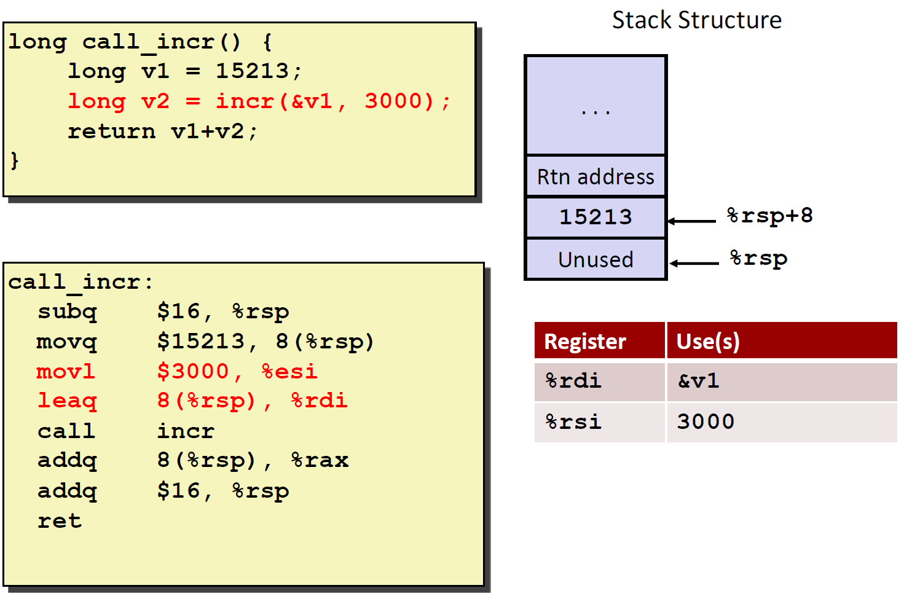

System Programming Week 6
Backward comparability
새로운 기술을 개발할 때 이전 기술과도 잘 동작하도록 설계하는 특성
CISC architecture
Complex
ISA
Instruction set of Architecture
Information flowing through CPU and memory
Address, Data, Instruction
Condition code - Status를 표시해주는 코드
Mechanisms in procedures
Passing control
- to beginning of procedure code
- back to return point
Passing data
- Procedure arguments
- return value
Memory management
- Allocate during procedure execution
- deallocate upon return
Mechanisms all implemented with machine instructions
x86-64 implementation of a procedure uses only those mechanisms required.

x86-64 Stack
Region of memory managed with stack discipline
Grows toward lower addresses
Register %rsp contains lowest stack address
- address of top element
stack pointer는 stack의 끝을 나타내는 pointer
stack은 위에서부터 아래로 쌓이고, heap은 아래에서부터 위로 쌓는다
Procedure control flow
Use stack to support procedure call and return
Procedure call: call label
- Push return address on stack
- Jump to label
Return address:
- Address of the next instruction right after call
Procedure return: ret
- pop address from stack
- jump to address
Procedure data flow
Stack-based languages

Call chain example
Stack Frame
Content
- Return information
- Local storage (if needed)
- Temporary space (if needed)
Management
- Space allocated when enter procedure
- set-up code
- includes push by
callinstruction
- Deallocated when return
- Finish code
- Includes pop by
retinstruction
일단 main에서 시작, yoo 호출
x86-64 / Linux Stack Frame
Current Stack Frame (Top to Bottom)
- Argument build - Parameters for function about to call
- Local variables if can’t keep in registers
- Saved register context
- Old frame pointer (optional)
Caller Stack Frame
- Return address
- pushed by
callinstruction
- pushed by
- Arguments for this call


Register Saving Conventions
CPU내의 register들은 일종의 공유하는 책상 느낌. 내가 쓰다가 남이 쓰면 데이터가 날아갈 수 있는데, 이 데이터를 다른데 보관해둬야 함. 그런데 매번 책상의 모든 데이터를 다 옮기는 것은 불편하니까, 레지스터의 일부는 저장용도로 남겨두는 것.
경우에 따라 달라서 뭐가 더 좋은지에 대한 구분이 힘듦
Recursive function


Observations about recursion

x86-64 Procedure summary
Array Allocation

movl (base, index, scale), Dest
Multidimensional (Nested) Arrays
Nested Array Row Access